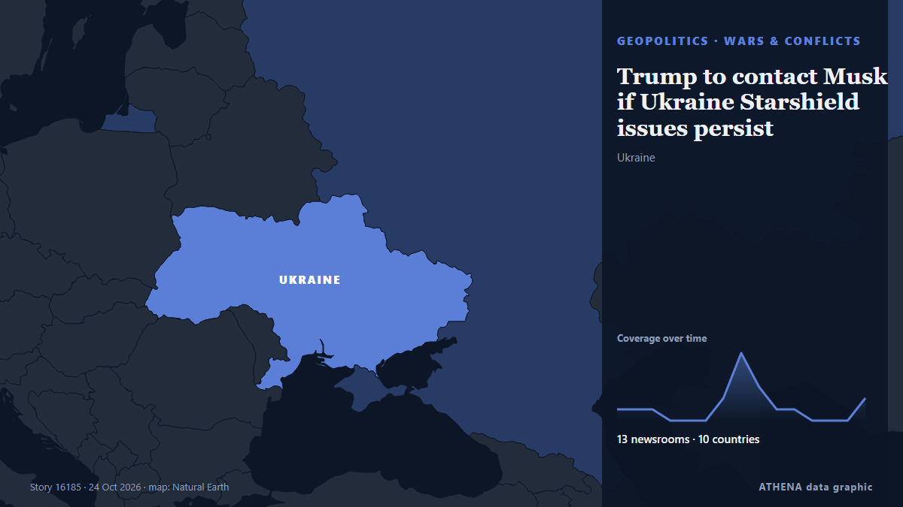

Trump to contact Musk if Ukraine Starshield issues persist

Based on his public statements, Elon Musk believes that these commercial products are being used essentially for offensive military operations, which is against the law, Fox News journalist Peter… from TASS (English)
Reported independently by 13 outlets in 10 countries since 21 Oct, first by Asharq Al-Awsat (English); coverage is at its peak. ATHENA rates the risk moderate (3.3/10), driven mainly by the severity of the harm described and its geographic and sector reach. Confidence is 86% (high), with 13 independent outlets corroborating it and an average source reliability of 78%. Newsrooms by country: Ukraine (5), Russia (3), Singapore (3). Coverage: 21 Oct to 24 Oct, 87 hours.
Why it matters: Russia's full-scale invasion of Ukraine began in February 2022. This tracker follows the fighting, strikes on infrastructure and the diplomacy around the war, as covered by newsrooms around the world.
What changed: 2 new reports from 2 newsrooms in the 24 hours to 24 Oct.
First reported as: Musk's Starshield system 'back' in Ukraine, says Trump
At a glance
Selected, scored and written by ATHENA's published methodology. No editor intervenes in individual events. How this is produced ›
| 21 Oct 06:43 UTC | 1 |
|---|---|
| 21 Oct 12:43 UTC | 1 |
| 21 Oct 18:43 UTC | 1 |
| 22 Oct 00:43 UTC | 0 |
| 22 Oct 06:43 UTC | 0 |
| 22 Oct 12:43 UTC | 0 |
| 22 Oct 18:43 UTC | 2 |
| 23 Oct 00:43 UTC | 6 |
| 23 Oct 06:43 UTC | 3 |
| 23 Oct 12:43 UTC | 1 |
| 23 Oct 18:43 UTC | 1 |
| 24 Oct 00:43 UTC | 0 |
| 24 Oct 06:43 UTC | 0 |
| 24 Oct 12:43 UTC | 0 |
| 24 Oct 18:43 UTC | 2 |
| 22 Oct 07:04 UTC | 1.9 |
|---|---|
| 23 Oct 19:29 UTC | 3.4 |
| 24 Oct 21:55 UTC | 3.3 |
Why these numbers
Importance
Risk
Confidence
The reporting — who reported it, and when
headline as published · opens the original- Asharq Al-Awsat (English) · Saudi ArabiaReport: Musk Ordered Reduction in Starshield Services for Ukraine
- TASS (English) · RussiaMusk probably limited Starshield for Kiev because it was used for attacks — Fox News
- PBS NewsHour World · United StatesHow Elon Musk gained so much power over U.S. security interests
- TASS (English) · RussiaTrump says Ukraine's access to Starshield restored
- The Straits Times · SingaporeUS Democratic senator probes Ukraine's loss of Starshield service
- Kyiv Post · UkraineTrump Says Musk Restored Ukraine’s Starshield
- Ukrainska Pravda (English) · UkraineAP: Trump's administration gives conflicting accounts of restrictions on Ukraine's Starshield access
- Kyiv Post · Ukraine‘Starshield Still Limited’ – Zelensky Says Restrictions Continue to Hamper Ukraine’s Drone Defenses
- Guardian Business · United KingdomTrump, Musk, Zelenskyy: who is blaming whom in the Ukraine-Starlink row?
- DW English · GermanyMusk's Starshield system 'back' in Ukraine, says Trump
- France 24 English · FranceUS offers mixed messages on limits to Ukraine's Starshield system
- Kyiv Independent · UkraineUS Senator Blumenthal opens probe into Ukraine Starshield restrictions
- The Straits Times · SingaporeUkraine reports problems with Starshield after Trump said access restored
- Kyiv Independent · UkraineAnalysis: Ukraine’s Starshield access is still crippled, and no one is taking the blame
- Punch · NigeriaTrump to contact Musk if Ukraine Starshield issues persist
- CBC News · CanadaCarney says 'direct casualties' are result of Ukraine's restricted access to Musk's Starshield
- CNA (Channel NewsAsia) · SingaporeUkraine says Starshield back to normal, Musk says Kyiv violated Starlink terms
- TASS (English) · RussiaTrump admits to discussing situation in Ukraine with Elon Musk